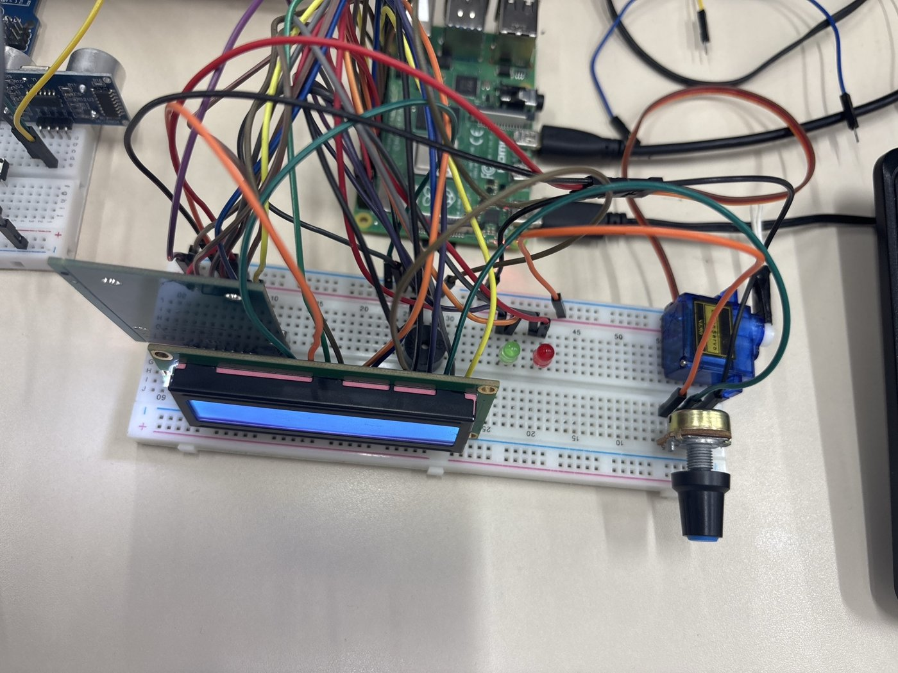
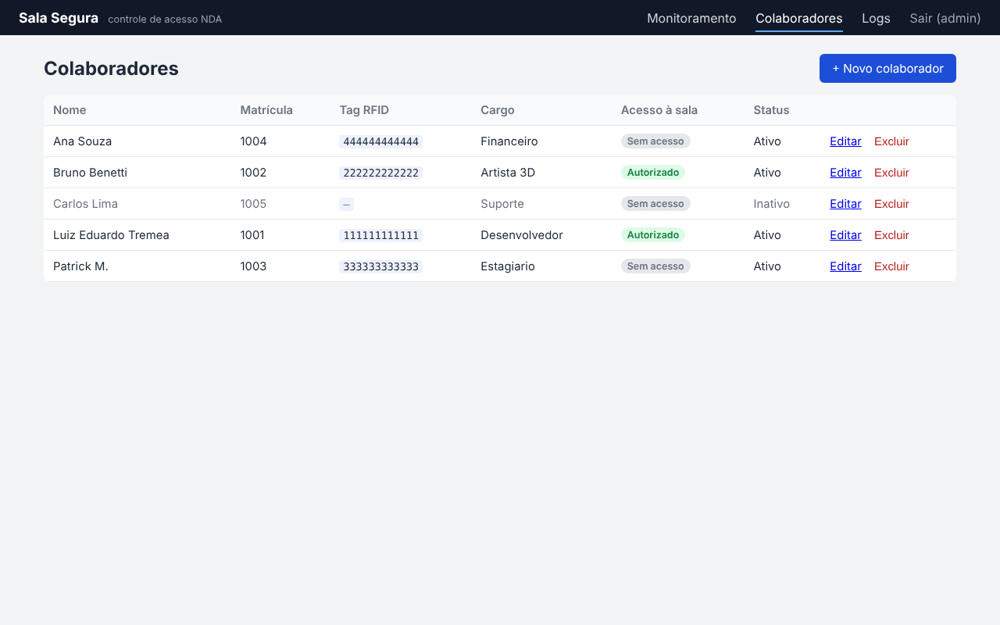
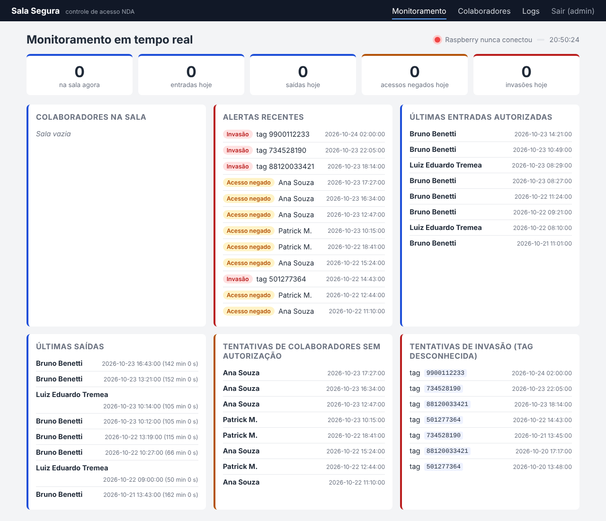

Uma Raspberry Pi na porta lê o crachá, decide na hora com o cadastro em cache, dá retorno em LEDs, buzzer e display, levanta a cancela e manda cada evento para um servidor Flask, que alimenta o painel de gestão, o monitoramento da segurança e a análise em Pandas.
Leitura RFID, LEDs, buzzer, LCD 16x2 e servo (cancela), cache local e fila offline. Modo simulado para testes sem hardware.
Flask + SQLite. API para a Rasp, login, CRUD de colaboradores, logs, monitoramento em tempo real, CSV.
Notebook Pandas lendo a API ou o CSV e respondendo as seis perguntas do enunciado.
| Situação | LCD | Atuadores | Evento |
|---|---|---|---|
| Autorizado, 1ª vez no dia | Bem-vindo, {nome} | verde · 2 bipes agudos · cancela abre 3 s | entrada |
| Autorizado, já veio hoje | Bem-vindo de volta, {nome} | idem | entrada |
| Autorizado, está dentro | Até logo + tempo do dia | idem | saida + duração |
| Cadastrado sem acesso | Sem acesso ao projeto | vermelho · bipe grave | acesso_negado |
| Tag desconhecida | ACESSO NEGADO + ID | vermelho piscando · sirene | invasao |
A mesma tag alterna entrada e saída. Leituras repetidas em menos de 3 s são ignoradas. Negado e invasão não abrem a cancela.
| Componente | Pinos |
|---|---|
| RFID MFRC522 (SDA, SCK, MOSI, MISO, RST) | 24, 23, 19, 21, 22 |
| LED verde / LED vermelho | 11 / 13 |
| Buzzer (tons por PWM) | 12 |
| Servo SG90 (cancela) | 15 |
| LCD 1602A em 4 bits (RS, E, D4 a D7) | 31, 33, 35, 37, 38, 40 |
| Potenciômetro | VO do LCD (contraste) |

Componentes com preço consultado (out/2026): Raspberry Pi 4 4 GB R$ 491,90 (MakerHero), kit RFID R$ 14,90, buzzer R$ 1,90 e protoboard R$ 8,90 (Eletrogate), servo SG90 R$ 17,33 (Usinainfo). Total cerca de R$ 535; LCD, potenciômetro, LEDs e jumpers vieram do kit da disciplina.


GET /api/sync baixa o cadastro para cache_colaboradores.jsonfila_offline.json (gravação atômica)Limitações do MVP
Exemplo com os dados de teste (23/10):
| Entraram | 2 pessoas (4 entradas) |
| Luiz na sala | 1 h 45 min |
| Acessos negados | 4 |
| Invasões | 2 |
HTTPS, chave por dispositivo, segundo fator (senha ou biometria), cartões MIFARE autenticados.
Fechadura eletromagnética no lugar do servo, sensor de porta e de presença, botão de chamada, servidor dedicado com backup, várias portas.
Perfis de usuário, trilha de auditoria, integração com RH, notificações, retenção de logs (LGPD).
Repositório: github.com/EduTremea/Trabalho-Rasp-Final